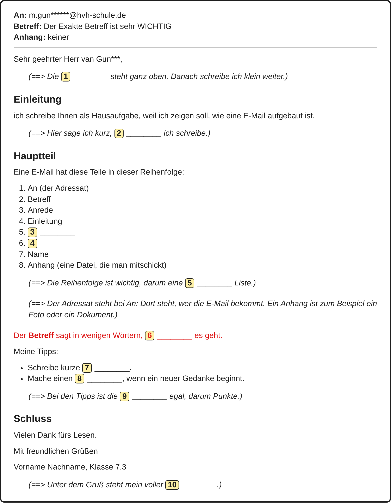

E-Mail in IServ schreiben ✏️
📄 Als PDF laden
Schritt für Schritt: So schreibst du deine E-Mail an Herrn van Gun***. Geht am PC und am Handy 📲. Mach immer nur einen Schritt, dann den nächsten.
1
E-Mail öffnen und Verfassen klicken. Links im Menü tippst oder klickst du auf
E-Mail (Pin 1). Dann oben auf
Verfassen (Pin 2).
2
Ganz wichtig: Auf „Formatiert“ umschalten. Am Anfang ist das Schreibfeld „unformatiert“. Dann fehlen dir Fett, Listen und Farbe. Klicke auf den Knopf
Formatiert.
Danach steht dort „Unformatiert“. Das ist richtig: Jetzt hast du die lange Leiste mit allen Knöpfen.
3
Die Felder kennen und ausfüllen.
 ABCDE
ABCDE
| A | An: Die genaue Adresse deiner Lehrkraft (m.gun******@hvh-schule.de) bekommst du im Unterricht. Wenn du anfängst zu tippen, schlägt IServ den Namen vor. Klicke ihn an. |
| B | Betreff: Schreibe ihn exakt ab. Auch jeder Großbuchstabe zählt. Ein anderer Betreff ist ein Fehler. |
| C | Anhänge: Hier hängst du Dateien an die E-Mail, zum Beispiel Fotos oder Dokumente. |
| D | Leiste: Hier sind die Formatier-Knöpfe. Sie sind auf der nächsten Seite erklärt. |
| E | Text: Hier schreibst du die E-Mail. |
Die Knöpfe in der Leiste
Zuerst markierst du den Text mit der Maus, dann klickst du den Knopf. Die Nummern gehören zur Liste darunter.
Die Leiste ist so lang, dass sie hier in zwei Hälften zu sehen ist: links und rechts.
| Nr. | Knopf | Das macht er. Das nimmst du dafür. |
|---|
| 1 | Formatiert / Unformatiert | Schaltet die Leiste an und aus. Muss an sein! |
| 2 | B Fett | Für ein Wort, das man nicht überlesen soll. Nur einzelne Wörter, nicht ganze Sätze. |
| 3 | I Kursiv | Für Erklärungen und Nebensachen. Die Schrift steht schräg. |
| 4 | U Unterstrichen | Unterstreicht ein Wort. Für Namen oder besondere Wörter. |
| 5 | S Durchgestrichen | Streicht ein Wort durch. Für etwas, das nicht mehr stimmt. |
| 6 | Text ▾ | Hier stellst du ein, ob eine Zeile normaler Text oder eine Überschrift ist. Klicke auf den Pfeil und schau, was es zur Auswahl gibt. |
| 7 | Einrücken | Schiebt die Zeile nach rechts. Für Erklärungen, damit man sieht: Das gehört zu dem Teil darüber. |
| 8 | Ausrücken | Schiebt die Zeile wieder nach links, wenn du zu weit warst. |
| 9 | Aufzählung (Punkte) | Für mehrere Dinge, bei denen die Reihenfolge egal ist. |
| 10 | Nummerierte Liste (1, 2, 3) | Für Dinge, bei denen die Reihenfolge wichtig ist. |
| 11 | Farbpalette | Färbt die Schrift. Klicke darauf und wähle eine Farbe, zum Beispiel Rot. |
| 12 | Marker | Färbt den Hintergrund hinter dem Text, wie ein Textmarker. |
Weitere Knöpfe: Schriftgröße, Schriftart, Ausrichtung (links, mittig, rechts, Blocksatz), Link und Bild.
📲 Am Handy
- Wort markieren: lange auf das Wort drücken (am PC: Doppelklick). Für mehrere Wörter ziehst du danach die Griffe.
- Keine Strg-Tasten: Nimm die Knöpfe der Leiste. „Rückgängig“ ist der Pfeil links in der Leiste.
- Leiste zu breit? Wische sie zur Seite oder tippe auf ⋮ (drei Punkte). Das Handy quer halten gibt mehr Platz.
Die Vorlage zum Abschreiben
So sieht die E-Mail aus, die du abschreibst. Setze für jede Nummer in eckigen Klammern, zum Beispiel [1], ein Wort aus dem Wortspeicher ein.
Wortspeicher: Anrede · warum · Hauptteil · Grußformel · nummerierte · worum · Sätze · Absatz · Reihenfolge · Namen · Anhang · Smileys · Betreff (drei Wörter bleiben übrig)

So wird formatiert:
- Die Zeilen mit ==> sind Erklärungen: ganz kursiv, in Klammern (das ==> steht in der Klammer) und eingerückt. Zwischen den Erklärungen und dem Text ist ein Absatz.
- „Einleitung“, „Hauptteil“ und „Schluss“ sind Überschriften (oder fett).
- Die Teile der E-Mail sind eine nummerierte Liste, die Tipps eine Aufzählung.
- Der Satz über den Betreff ist rot. „Betreff“ ist fett.
- Schreibe statt „Vorname Nachname“ deinen eigenen Namen.